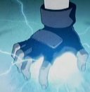
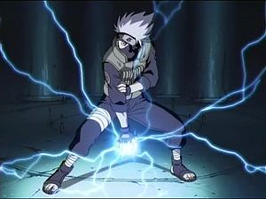
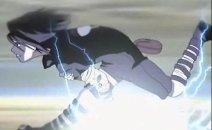
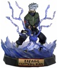

Chichidori
 De: La Frikipedia, la enciclopedia extremadamente seria.
De: La Frikipedia, la enciclopedia extremadamente seria.
 Ejemplo de chichidori... Pero no me lo acerques demasiado, que nos carga el diablo...
Del japonés: "Mil pájaros te picarán en los ojos". Es una desarrollada por Mierdashi, que posteriormente se la transmite en herencia a su discípulo Sasuke para discriminar a Naruto, hacer que éstos se cabreen, se maten y ya no tenga que atender a sus dos alumnos, y así, quedarse a solas con Sakura (¡que os esperábais! ¡es un tío que lee novelas porno en vez de revistas y usa máscara para que no lo fiche la policía! ¡¡está claro de que no tardará en tirársela!!)
Historia
 Kakashi,
masturbandose haciendo el chichidori para impresionar a unas nenas.
Era una noche de tormenta, y a Mierdashi se le habían acabado todas novelas porno de su biblioteca personal. De repente, se le ocurrió salir cubierto de papel aluminio, meterse en el bosque, subirse al árbol más puntiagudo y poner una antena de televisión allí.
nota:mentimos al decir que Mierdashi se abia acabado todas las novelas porno de su biblioteca personal esas nunca se acaban.
Sorpresivamente y contra todo pronóstico no le cogió un rayo, le cogieron más de diez rayos a la vez. Y claro, el pobrecito quedó cargado negativamente, y al acercarse a la televisión de su casa (después de una larga recuperación a base de sexo duro con enfermeras una serie de dolorosas operaciones) surgieron chispas (literalmente) entre el televisión y él. Entonces se le ocurrió la magnifica idea de hacerse una pelotita con esos rayos. Resultado: Kakashi tiene la mano quemada de tanto masturbarse chichidori (¿por que crees que lleva guantes?).
Funcionamiento
 ¡
Dios mío, me quemo! ¡¡¡Que alguién me quite este chichidori de la mano!!!
Te pones en la copa de un pino durante una tormenta, te coge un rayo, y si sobrevives ya puedes hacer esta técnica (el caso de Mierdashi). También tienes la posibilidad de pelar con los dientes un cable de alta tensión (como Sasuke)o de frotarte los pies repetidamente en una alfombra gruesa. Una vez que cumples uno de estas 3 opciones, tienes que ponerte un guante, un calzoncillo, una bolsa de plástico, un tarro de azúcar... para no quemarte la mano (total es lo mismo, te tienes que quitar el guante para masturbarte, y así si que te quemas la mano). Pero ojo, sólo puedes hacer el Chichidori un determinado número de veces. Si te pasas viene Manda y te come te puedes morir por pérdida de electricidad en sangre. También tienes la opción de meterte un cable de alta tensión por el culo y así poder hacer chichidoris ilimitados... pero es mejor que no pruebes, que igual te gusta y todo...
Variantes copias
 Figurita de acción del Chichidori. No sirve para matar a base de rayos, pero se podría usar como arma arrojadiza
- Rayokillo: (del japonés: "mil pájaros te picarán en los ojos y en la
polla cabeza) variedad derivada del encontronazo de Mierdashi con el rayo, pudo desarrollar una técnica que es como el chidori... pero 10^10000000000000000000 veces más potente. Pero si la haces te expones al riesgo de que se te queme la mano, el brazo, la cabeza, te mueras y un McDonalds recoja tu cadáver para hacer hamburguesas.
- Chichidori Nagashamapetilan: (del japonés: mil pájaros te picarán en todo el cuerpo) es la técnica que desarrolla Sasuke, debido a su forma de conseguir el Chichidori no-natural, mordiendo un cable de alta tensión (pero no podía exponerse a un rayo como hace todo el mundo!). Viene siendo como un Chichidori normal, pero que puedes enfocar en cualqier parte del cuerpo y no sólo en las manos, lo que es muy útil
para tener sexo "electrizante" con Sakura para darle más gustirrinín a Porrochimaru (si yo fuera Sasuke, escogería la primera opción y me dejaría de tonterías...).
¿Sabías que...
- ...Kakashi se estaba masturbando cuando le cayó el rayo?
- ... Y que Maito Gai lo estaba viendo?
- ...ninguna persona con menos de 99,9% en el índice de tíorrarolidad podría aguantar tanta electricidad en su cuerpo (a no ser que sea electricista)?
- ...cuando Sasuke mea le salen rayos por la polla?
- ...Sasuke no tiene polla?
- ...Kakashi abusó de Sasuke repetidamente alegando que era un entrenamiento para el Chichidori?
- ...en realidad Homer también ha soportado una descarga eléctrica de un rayo, y si no hace el Chichidori es por vagancia?
- ...cuando salieron chispas entre Kakashi y su Televisión se le electrificó la polla y desde entonces no puede estar más de cinco segundos sin leer porno?
- ...el chichidori es un potente método anticonceptivo?
- ...un día Sasuke se rascó los cojones mientras hacía el chichidori, y desde entonces se ha quedado estéril?
- ... pero tampoco tiene Cojones?
- ...uno de los posibles usos del chichidori es de desatascador de váteres?
- ...en realidad el trueno que sale en el fondo de Cálico Electrónico es un chichidori extraviado por Kakashi?
- ...si sabes usar el chichidori, nunca más tendrás un apagón en casa?
- ...si dos personas usan el chichidori a la vez en un radio de menos de cinco metros el universo se replegará sobre sí mismo y desaparecerá?.
- ...el chichidori NO sirve como abrelatas?
- ...no deberías usar un chichidori sin antes meterte un sharingan
por el culo en el globo ocular?
Enlaces
Monzykaryo haciendo el chidori[ http://www.youtube.com/watch?v=r4uExibLBrY ]
Autor(es):
- Frikiman
- Roms
- Khazike Khashondo
- Nadaquever
- Diegocon13
- Merlock Profetus profeta
- Patadaenelcraneo
- AlemanH
- Borrador2
- Reybendayana
Frikipedia 2005-2016, Licencia
GFDL 1.2 - Extraído por FrikiLeaks